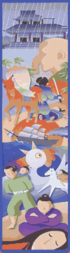

|
Akutagawa Ryonosuke was born in the Tsukiji district of Tokyo in March 1892. The
eldest son of Niihara Toshizo, he was adopted by his uncle, Akutagawa Michiaki,
when his mother went mad only a few months after his birth. The boy felt remote
from both his real and his adopted parents, though the insanity of his mother
- who lived on in his father's house, a silent, pallid figure obsessively sketching
fox-people - was to cast a shadow over his entire life.
As a child, Akutagawa was an avid reader of popular ghost stories. As a young
student, his reading grew to cover the Chinese classics, contemporary Japanese
authors such as Ogai and Soseki, as well as Maupassant, Anatole France, Kipling,
Poe and other masters of the short story.
Entering Tokyo Imperial University in 1913 as an English literature major, Akutagawa
lost no time in producing original work. He had his first short story published
in 1914, while Rashomon, his best-known tale and the title story of his first
collection, came out the following year. 1916 marked his breakthrough, when The
Nosewas praised by Natsume Soseki and literary magazines began to court the young
writer.
The early stories are often based on old collections of tales, such as the Konjaku
Monogatari, but with psychological insight and dramatic narrative techniques providing
depth and credibility for a modern audience. One should not, however, suggest
that Akutagawa is a realist. His stories are perfect expressions of the decadent
aesthetic, with the gorgeous and the grotesque, the splendid and the sordid, intertwining
in highly polished prose.
After graduating in 1916, Akutagawa began teaching English at the Naval Engineering
School in Yokosuka, but resigned in 1919, having secured a contract (just as Soseki
had done a decade earlier) to produce fiction for a newspaper. Now married, Akutagawa
was a popular and successful author publishing new collections of his work every
year.
In March 1921 Akutagawa was sent to China by the newspaper for which he worked.
His health took a dramatic turn for the worse while in Shanghai. The remainder
of his life was a tormented cocktail of insomnia, gastric problems, and paranoia
about having inherited his mother's mental disorder. When he sought new modes
of expression outside the short story his popularity sagged, while his extensive
family responsibilities were also burdensome.
On July 24, 1927, a physically and mentally exhausted Akutagawa killed himself
with an overdose of barbiturates. The signs of despair are plain to see in Kappa,
a superficially playful fable written just a few months prior to his death. The
human narrator is a patient in a mental hospital: an embryo begs to be aborted
out of fear that he will succumb to hereditary insanity: and Tok - a depressive
poet who finally commits suicide - is regarded by many commentators as a self-portrait.
Akutagawa's life was short, but his oeuvre of over 100 short stories was nonetheless
enough to establish him as the uncontested master of the short story in modern
Japanese literature.
This website provides Japanese-language audio versions of three Akutagawa stories:
Rashomon (1915), The Nose (1916) and In a Grove (1922).
|


|